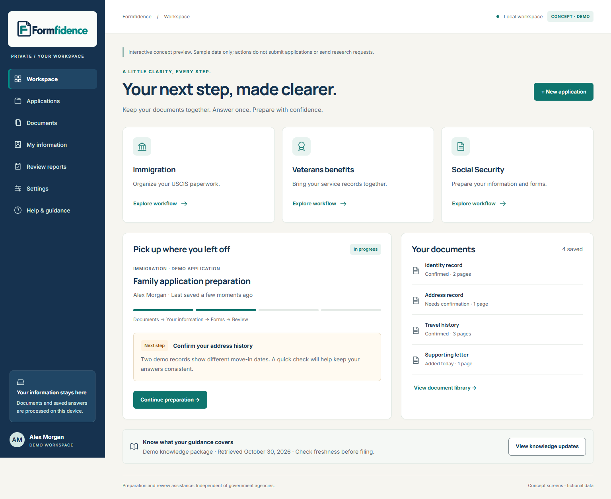
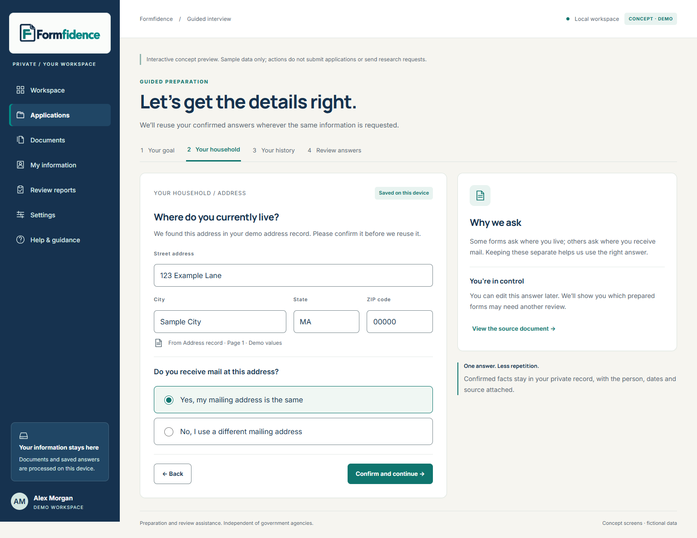
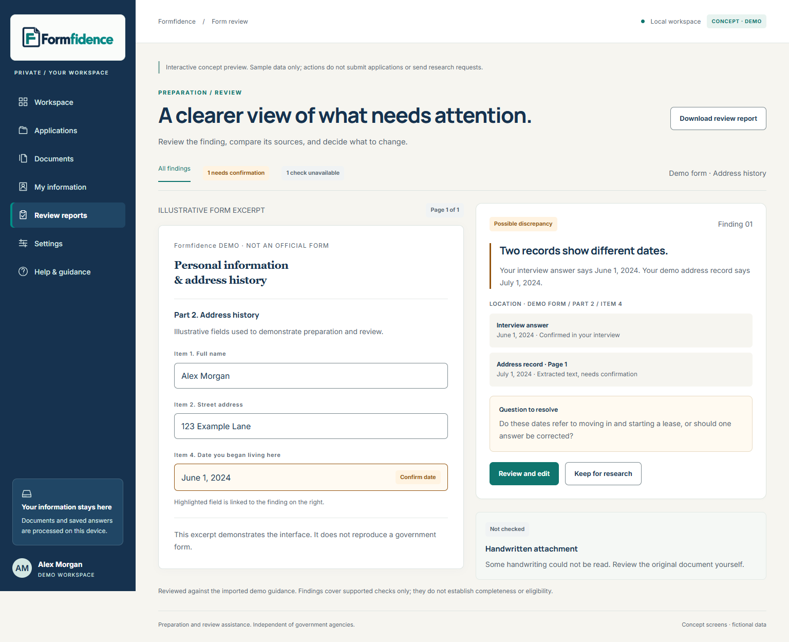
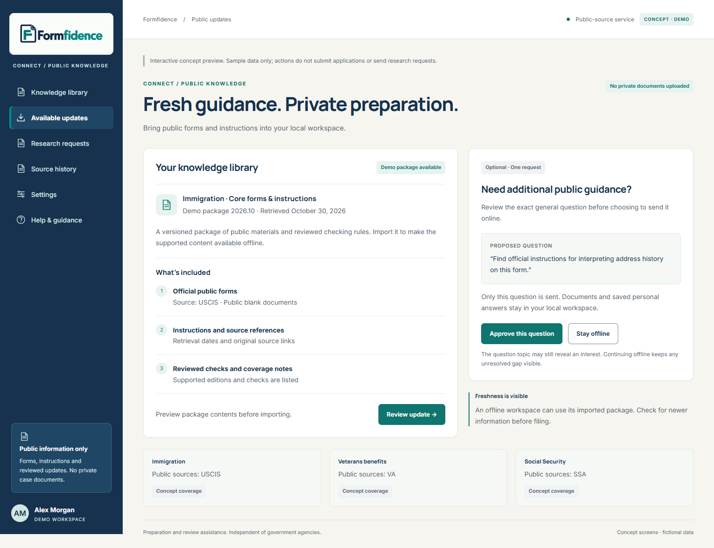

Explore the refreshed direction: a navy workspace, Manrope headings, Inter interface text and the approved bright teal Formfidence logo. Sample data is fictional; controls demonstrate the proposed experience.
Interactive concept · October 2026
01 Workspace
A calm overview of documents, applications and the next step.
Explore screen →
02 Guided interview
Clear questions, reusable answers and visible source context.
Explore screen →
03 Review report
Compare findings and source records before confirming an answer.
Explore screen →
04 Public updates
Review public guidance while keeping personal preparation local.
Explore screen →Designed for clarity and access
Keyboard navigation, visible focus, native demo dialogs and layouts that reflow to a narrow screen are included. Automated and interaction checks are documented in the accessibility audit. These checks support an accessibility review; they do not certify full WCAG or ADA compliance.